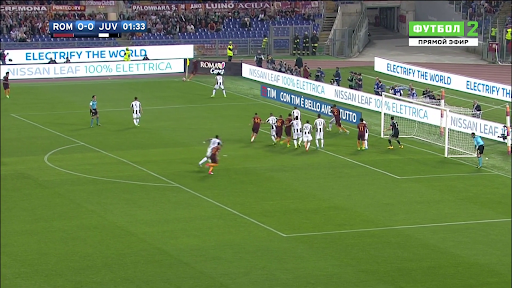

Deep Learning Transformer Archetecture
Our project aimed to develop a system that could analyze and annotate soccer game videos using a state-of-the-art visual transformer. However, due to various issues such as the difficulty of manipulating the entire dataset, RAM requirements, and getting the video transformer to work, the project pivoted to building a transformer for image classification of "key moments." The PyTorch Lightning framework was used to plug both the transformer and a ResNet model into the same dataset. The ResNet model was implemented as a baseline to compare the transformer model to.
The transformer model used was VIT, which is a transformer-based architecture applied to images for image classification tasks. It works by first dividing an input image into a grid of patches and representing each patch as a linear embedding. These embeddings are then treated as tokens and input into the transformer architecture as a sequence. The final layer of the transformer produces a prediction for the image classification task by performing classification on the weighted patch embeddings. The ResNet model was also implemented and had an accuracy of 40.9%, while the transformer had an accuracy of 53.3% on the test data after 25 epochs.
The results show that the transformer had a 10% boost in scores over the ResNet, but the accuracies for both models were not as high as expected. This could be due to several factors such as the image dataset not being as full as desired. Overall, the project provided a modular setup for easy experimentation with industry-standard frameworks and demonstrates the potential of using transformers for soccer video analysis.
For more detailed information about the project, please refer to our final paper (provided below), which contains a comprehensive summary of our project.
Tools
Python, Pytorch
- 